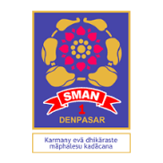

Universitas UdayanaS1 Teknologi Informasi | 2025 - Sekarang (Semester 3) |
Tentang Saya
Saya adalah mahasiswa Teknologi Informasi di Universitas Udayana dengan minat yang besar pada pengembangan web dan digital marketing. Saya memadukan keahlian teknis di bidang IT dan desain dengan kemampuan interpersonal yang kuat, yang banyak terbentuk dari pengalaman satu tahun saya di dunia hospitality sebagai bartender. Fasih berbahasa Inggris dan mudah berkolaborasi, saya unggul dalam kerja tim serta memiliki dorongan untuk membangun solusi digital yang kreatif dan fungsional, sekaligus memasarkannya secara efektif kepada audiens yang tepat.
Pendidikan
|
 |
SMA Negeri 1 Denpasar2022 - 2025 |
Keahlian
Keahlian Teknis (Hard Skills)
- Basis Data: MySQL/MariaDB
- Administrasi Server: Linux Server Administration
- Jaringan: Networking Tools
- Desain UI/UX: Figma
- Pengembangan Web: Pembuatan & Hosting Website (Full-Cycle)
Keahlian Non-Teknis (Soft Skills)
- Strategi Marketing
- Operasional Hospitality yang Serba Cepat
- Kerja Sama Tim & Kolaborasi
- Komunikasi Efektif
Proyek Akademik & Pribadi
Monetra
Proyek Pribadi
Merancang dan mengembangkan aplikasi keuangan pribadi yang bertujuan menyederhanakan pengelolaan anggaran sehari-hari. Aplikasi ini memungkinkan pengguna mengelola uang mereka dengan mudah dan membagi dana secara dinamis sesuai kondisi finansial masing-masing.
Ticketing Application
Proyek Pribadi | Java & SQL
Membangun sistem pemesanan dan tiket yang komprehensif menggunakan Java dan SQL. Aplikasi ini merepresentasikan platform komersial di dunia nyata, menangani reservasi pengguna dan manajemen basis data secara efisien.
Personal Home Server
Proyek Pribadi
Mengonfigurasi dan saat ini mengelola home server pribadi untuk menghosting proyek-proyek pribadi secara mandiri serta mengatur infrastruktur jaringan.
Pengalaman
Part-Time Editor & Marketing — Fooday Eatery
Mengelola penyuntingan konten digital dan menjalankan strategi marketing untuk meningkatkan visibilitas merek serta mendorong keterlibatan pelanggan.
Kitchen & Bar Staff —
1 Tahun
Memperoleh pengalaman langsung selama satu tahun di lingkungan hospitality yang serba cepat. Menangani operasional bartending dan dapur, yang secara signifikan mengasah kemampuan saya dalam berkomunikasi secara efektif, mengelola waktu, dan bekerja sama dalam tim.
Bahasa
- Bahasa Inggris: Fasih (Fluent)
- Bahasa Mandarin: Dasar (Basic)
- Bahasa Spanyol: Dasar (Basic)